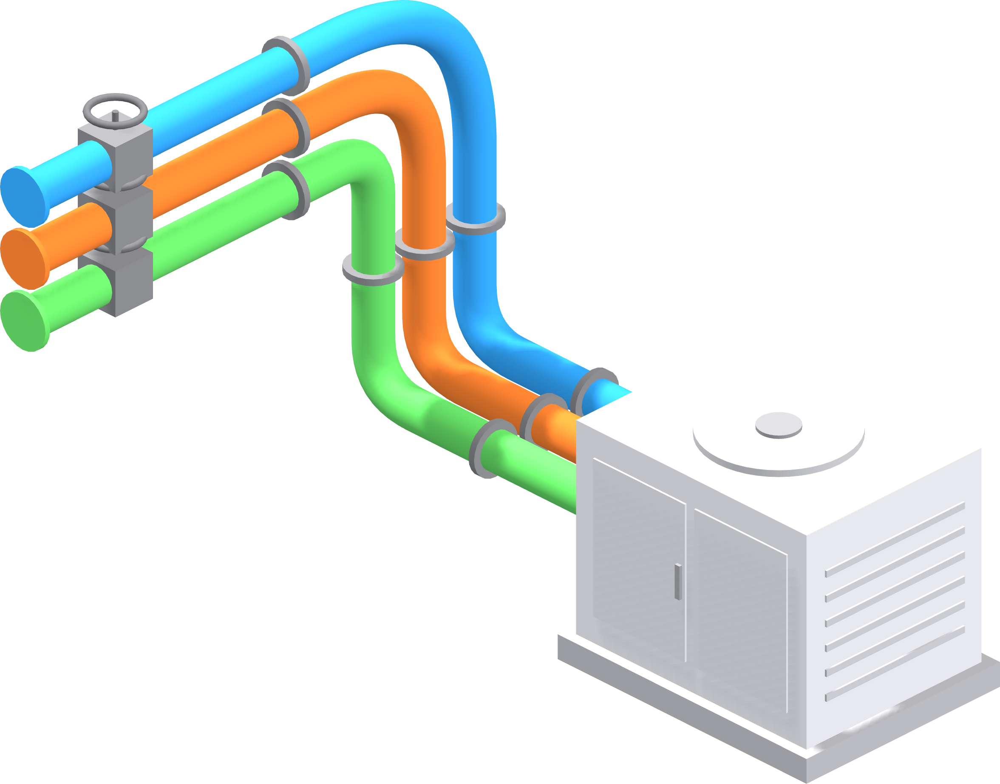

Every system in its place.
BIM modelling and coordination

Model validation
Every model audited for accuracy, data and standards before it is issued.
Clash detection
Federated models, tracked clashes and weekly coordination, resolved before site.
MEP modelling
Mechanical, electrical and public health systems modelled to LOD 400, ready for coordination and fabrication.
Handover
Asset data and as-built models ready for operations.
- ScopeWe review your design information and confirm scope, fee and programme.
- ModelBuilding services developed to the agreed level of detail and project standards.
- CoordinateClashes identified, reviewed with the design team and resolved.
- IssueValidated models and drawings issued to your common data environment.
ISO 19650 · COBIE · UNICLASS — REVIT · NAVISWORKS · AUTODESK FORMA